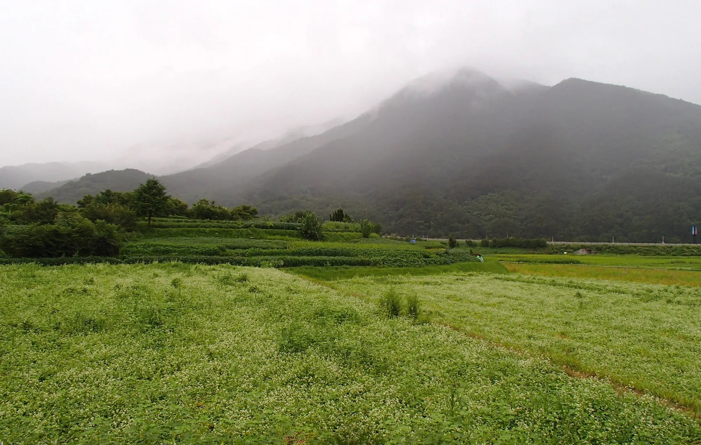
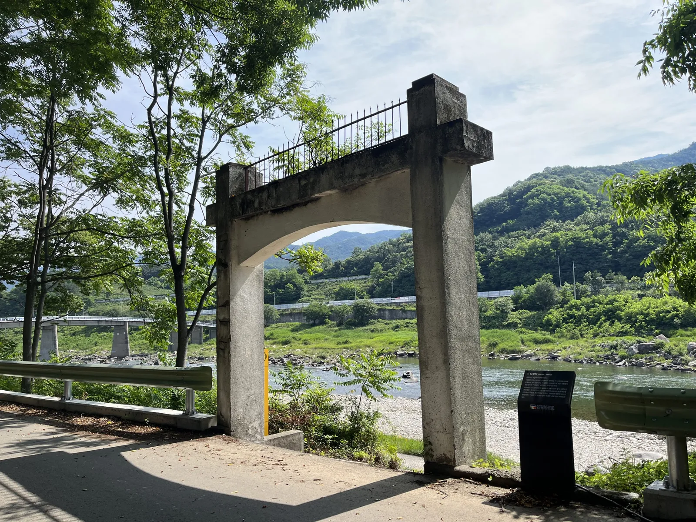
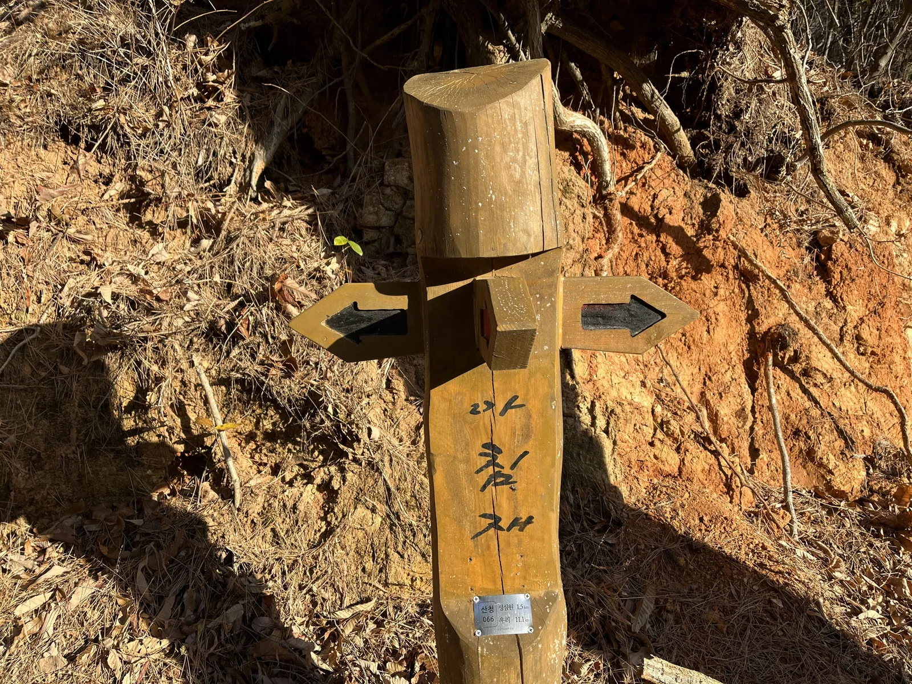
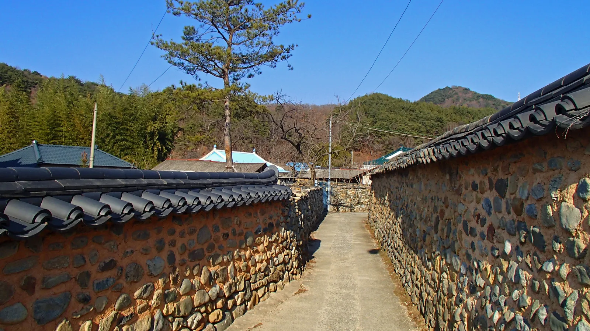
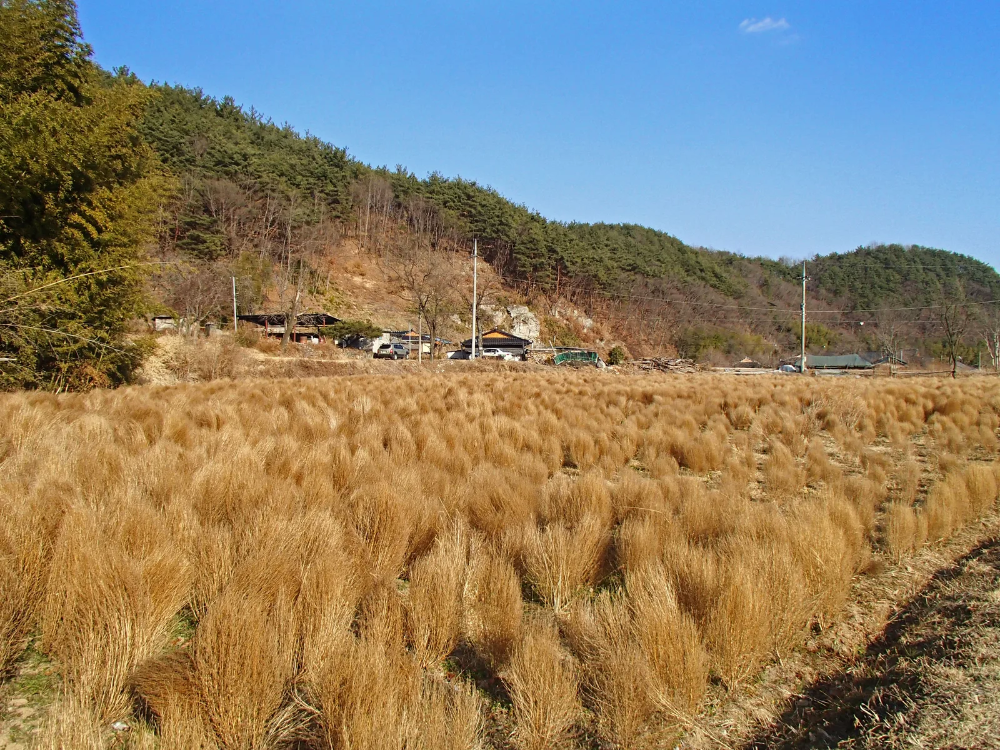
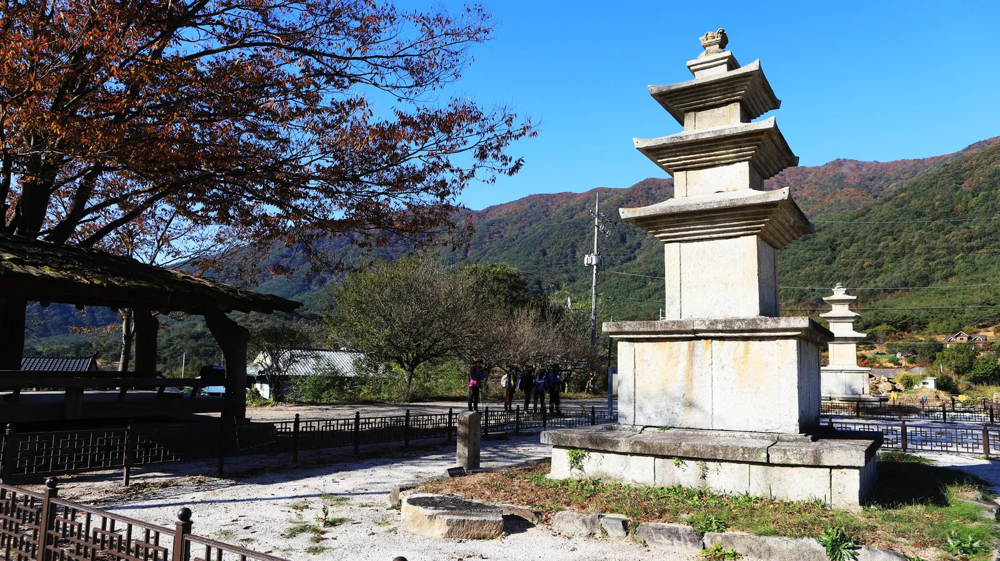
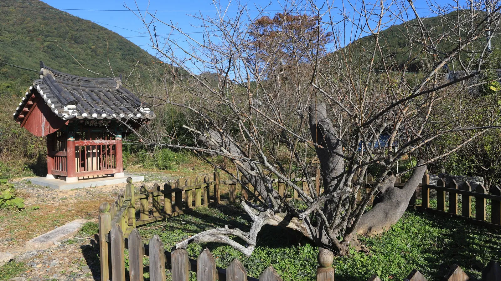
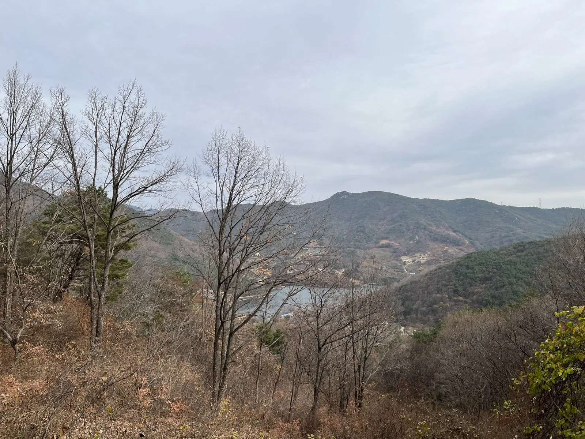

▲ 지리산둘레길은 지리산을 둘러싼 다섯 개 시·군을 잇는 도보길로, 그중 일부 구간이 경남 산청군을 지난다
지리산둘레길은 전북 남원, 전남 구례, 경남 함양·산청·하동 등 지리산을 둘러싼 다섯 개 시·군의 마을과 숲길, 강변을 이어 총 22개 구간, 약 300km에 걸쳐 조성된 장거리 도보길이다. 사단법인 숲길이 산림청의 지원을 받아 운영하며, 어느 한 구간만 걸어도 되고 전 구간을 이어 걸어도 되는 자유로운 방식이 특징이다. 이 중 일부 구간은 경남 산청군을 지난다. 이 기사는 산청을 지나는 구간의 위치와 거리·난이도, 스탬프 인증 제도, 연계 볼거리까지 정리했다.
1. 지리산둘레길이란 — 22개 구간, 약 300km
▲ 지리산둘레길은 정상 등반이 아니라 지리산을 둘러싼 마을과 숲길을 잇는 저지대 도보길이다 ⓒ Wikimedia Commons
지리산둘레길은 지리산 정상을 오르는 등산로가 아니라, 지리산을 빙 둘러싼 마을과 숲, 강변길을 잇는 저지대 도보길이다. 전체 22개 구간, 약 300km에 이르며 남원·구례·함양·산청·하동 다섯 개 시·군에 걸쳐 있다. 옛 장터를 오가던 길, 마을과 마을을 잇던 농로, 숲길이 뒤섞여 있어 지역 주민들의 삶을 가까이서 볼 수 있다는 점이 특징이다. 처음부터 전 구간을 이어 걸을 필요는 없고, 접근이 편한 구간 한두 개만 골라 당일치기로 걸어도 충분히 지리산둘레길의 정취를 느낄 수 있다.
2. 산청을 지나는 구간 — 경호강을 따라 걷는 길

▲ 지리산 자락 산청 들녘. 둘레길 산청 구간 상당수가 이런 농촌 풍경을 지난다 ⓒ Wikimedia Commons
산청군을 지나는 지리산둘레길 구간은 여럿 있는데, 그중 널리 알려진 것이 6코스 수철~성심원 구간이다. 산청군 금서면 수철리에서 산청읍 풍현마을 성심원까지 12.5km, 약 4시간이 걸리며, 지리산 동쪽 기슭의 지막·평촌·대장마을을 지나 산청읍을 휘돌아 흐르는 경호강을 따라 걷는 구간으로 소개된다. 난이도는 비교적 완만한 편이다. 다만 이어지는 7코스 성심원~운리 구간(13.4km, 약 5시간)은 사정이 다르다. 성심원에서 아침재를 넘어 웅석봉 턱밑인 해발 800m 부근 헬기장까지 오른 뒤 탑동마을로 긴 내리막 임도를 타고 내려가는 코스로, 산청 구간 가운데서는 난이도가 높은 편에 속한다. 이어지는 8코스 운리~덕산 구간은 약 13.9km로, 산청군 시천면 방향으로 이어진다. 즉 산청군 일대 지리산둘레길은 6코스는 강변길 위주로 완만하지만, 7·8코스로 갈수록 산길 구간이 늘어나 난이도가 올라가는 편이다. 구간별 정확한 명칭과 통제 여부는 시기별로 조정될 수 있으므로, 방문 전 (사)숲길 공식 홈페이지나 산청군청 문화관광 페이지에서 최신 정보를 확인하는 것이 좋다.
| 구간 | 거리 | 소요시간 | 난이도 |
|---|---|---|---|
| 6코스 수철~성심원 | 12.5km | 약 4시간 | 완만(경호강변) |
| 7코스 성심원~운리 | 13.4km | 약 5시간 | 높음(웅석봉 턱밑 800m 오르막) |
| 8코스 운리~덕산(시천) | 약 13.9km | 약 5시간 안팎 | 중급 |
표의 수치는 산청군청 문화관광 페이지와 대한민국 구석구석(한국관광공사) 안내를 기준으로 했으며, 실제 안내판 표기나 계절에 따른 우회로 여부에 따라 소폭 달라질 수 있다.
산청군청 문화관광 지리산둘레길 페이지에서 확인 가능
▲ 7코스 성심원~운리 구간 길목의 나루터 표지. 경호강을 따라 걷는 길목에 세워져 있다 ⓒ (사)숲길 지리산둘레길

▲ 아침재 갈림길의 이정표. 성심원까지 1.5km, 운리까지 11.1km가 남았다는 표기가 붙어 있다 ⓒ (사)숲길 지리산둘레길
3. 스탬프(여권) 제도 — 구간마다 스탬프함에서 직접 찍는 방식
지리산둘레길에는 완주를 기록하는 스탬프 인증 제도가 있다. 예전에는 각 구간 안내센터에서 방문객에게 직접 스탬프를 찍어주는 방식이었지만, 현재는 구간마다 스탬프함을 설치해 방문객이 스스로 찍는 방식으로 운영되는 것으로 알려져 있다. 스탬프북(여권)은 지리산둘레길 안내센터 등에서 구할 수 있으며, 모바일 스탬프 투어 앱을 함께 활용하는 방문객도 늘고 있다. 정확한 스탬프북 구입처와 운영 방식은 계속 바뀔 수 있으므로, 걷기 전 (사)숲길 공식 홈페이지의 최신 공지를 확인하는 편이 안전하다.
✅ 스탬프 투어 참고할 점
· 스탬프북(여권)은 안내센터 등에서 구입, 최근에는 구간별 스탬프함에서 직접 날인
· 국립공원공단이 운영하는 '국립공원 스탬프투어'와는 별개의 제도이므로 혼동 주의
· 최신 운영 방식은 (사)숲길 공식 홈페이지에서 확인 권장
4. 연계 볼거리 — 남사예담촌과 단속사지·정당매

▲ 산청의 대표 전통마을 남사예담촌. 옛 돌담길이 그대로 남아 있어 산책하기 좋다 ⓒ Wikimedia Commons
산청군에는 지리산둘레길과 함께 들러볼 만한 전통마을 남사예담촌이 있다. 옛 돌담길과 고택이 잘 보존돼 있어 한국에서 가장 아름다운 마을로 꼽히기도 하는 곳으로, 둘레길 걷기 전후로 마을 골목을 천천히 걸으며 옛 정취를 느끼기 좋다. 산청군 일대는 이 밖에도 한방 관련 명소와 경호강변 풍경이 유명해, 둘레길 트레킹과 묶어 하루 이상 일정을 짜는 여행객도 많다.

▲ 산청 인근의 농촌 풍경. 지리산둘레길은 이런 마을과 밭 사이를 지나는 구간이 많다 ⓒ Wikimedia Commons
7코스 성심원~운리 구간 도중에는 옛 절터인 단속사지가 있다. 통일신라 때 창건된 것으로 전해지는 절이 사라지고 지금은 동·서 삼층석탑만 남아 있는데, 절터 한쪽에는 고려 말 문신 강회백이 심었다고 전하는 매화나무 정당매가 자란다. 국내에서 손꼽히는 오래된 매화나무 중 하나로, 이른 봄이면 이 매화를 보러 찾는 방문객도 있다.

▲ 단속사지 삼층석탑. 둘레길 여행자들이 잠시 쉬어가는 길목이다 ⓒ (사)숲길 지리산둘레길

▲ 단속사지 옆에 자리한 정당매. 고려 말 심어졌다고 전하는 오래된 매화나무다 ⓒ (사)숲길 지리산둘레길

▲ 7코스 웅석봉 하부 헬기장 부근에서 내려다본 산청 골짜기. 오르막을 넘어야 만날 수 있는 조망이다 ⓒ (사)숲길 지리산둘레길
5. 걷기 전 준비물과 유의사항
지리산둘레길은 대체로 저지대를 지나지만, 구간에 따라 산길과 논둑길이 섞여 있어 발목까지 감싸는 편한 등산화가 필요하다. 마을을 지나는 구간이 많은 만큼 주민들의 생활공간이라는 점을 염두에 두고 조용히 걷는 것이 예의다. 여름에는 물을 넉넉히 챙기고, 가을·겨울에는 해가 짧아 늦은 오후 출발은 피하는 것이 좋다. 구간별 식수·화장실·대중교통 정보는 공식 홈페이지의 구간 안내를 사전에 확인하는 것이 가장 정확하다.
✅ 지리산둘레길 산청 구간, 가기 전 체크리스트
· 지리산둘레길은 총 22개 구간·약 300km, 산청군은 6~8코스(수철~성심원~운리~덕산) 등 여러 구간이 지남
· 6코스(12.5km·약 4시간)는 경호강변 위주로 완만, 7코스(13.4km·약 5시간)는 웅석봉 턱밑 800m까지 올라야 해 난이도가 높은 편
· 8코스 운리~덕산은 약 13.9km, 산청군 시천면 방향으로 이어짐
· 스탬프는 구간별 스탬프함에서 직접 날인, 국립공원 스탬프투어와는 별개 제도
· 연계 볼거리로 전통마을 남사예담촌, 7코스 길목의 단속사지·정당매 추천
· 정확한 최신 구간명·거리·통제 여부는 (사)숲길·산청군청 공식 홈페이지에서 확인 권장